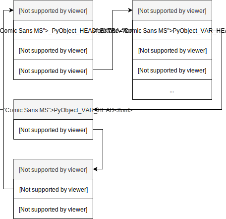
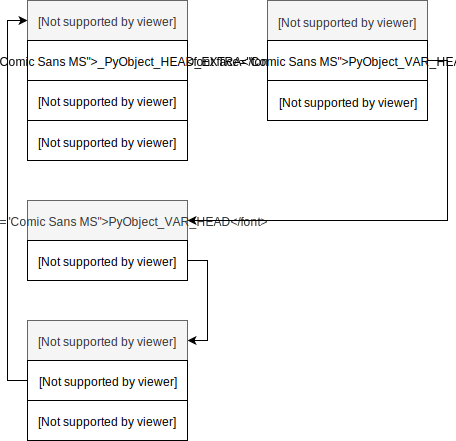
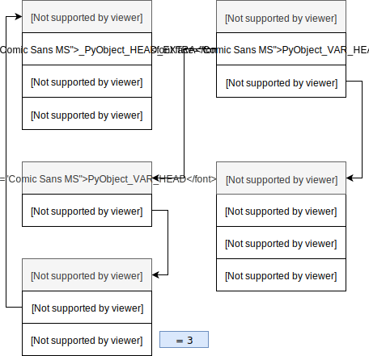
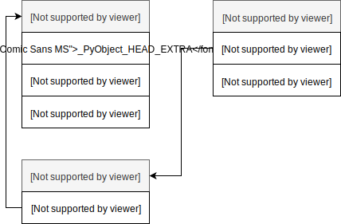
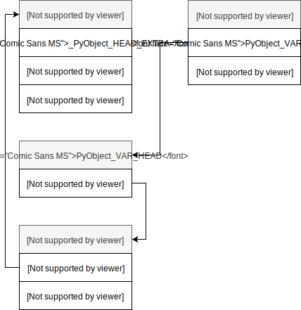
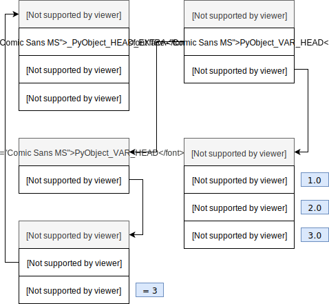

Data types
Все является объектом
В Python все является объектом («Everything is an Object»): числа, последовательности, функции, классы, модули и т.д. Каждый объект обладает уникальным идентификатором, который никогда не изменяется после создания объекта (в CPython идентификатором объекта является его адрес в памяти, который можно получить с помощью встроенной функции id()), типом, который определяет «чем является объект» (числом, строкой, списком и т.д.) и какие действия над ним можно выполнять, а также значением.
Каждый объект «наследуется» от Си-структуры PyObject или PyVarObject для объектов переменной (variable) длинны (списки, кортежи и т.д.):
typedef struct _object {
_PyObject_HEAD_EXTRA
Py_ssize_t ob_refcnt;
struct _typeobject *ob_type;
} PyObject;
Где:
_PyObject_HEAD_EXTRA- макрос, который определяет два поля_ob_nextи_ob_prev- указатели на следующий и предыдущий объекты, соответственно. Будут ли эти поля включены в структуруPyObjectили нет - зависит от флагаPy_TRACE_REFS, который по умолчанию не установлен;ob_refcnt- счетчик ссылок на объект, который увеличивается или уменьшается, при копировании или удалении указателя на объект; когда счетчик ссылок достигает нуля, то объект удаляется. Про подсчет ссылок и «сборку мусора» мы будем говорить в одной из следующих лекций;ob_type- указатель на структуру_typeobject, которая задает тип объекта.
Структура PyVarObject включает одно дополнительное поле ob_size - количество элементов в объекте (например, для списка из пяти элементов ob_size будет равен 5):
typedef struct {
PyObject ob_base;
Py_ssize_t ob_size; /* Number of items in variable part */
} PyVarObject;
Связи между соответствующими структурами показаны на следующем рисунке:

Итак, если вы решили ввести свой тип, то он должен «наследоваться» от PyObject или PyVarObject с помощью макросов PyObject_HEAD и PyObject_VAR_HEAD:
#define PyObject_HEAD PyObject ob_base;
...
#define PyObject_VAR_HEAD PyVarObject ob_base;
Например:
typedef struct _myobject {
PyObject_HEAD
...
} PyMyObject;
Таким образом, PyMyObject будет содержать все поля, которые есть в PyObject.
Следует помнить, что макрос PyObject_HEAD должнен идти первым в структуре. Это связано с «наследованием», о котором говорилось ранее. Как утверждается в object.h:
Quote
Objects are always accessed through pointers of the type PyObject *.
The type PyObject is a structure that only contains the reference count
and the type pointer. The actual memory allocated for an object
contains other data that can only be accessed after casting the pointer
to a pointer to a longer structure type. This longer type must start
with the reference count and type fields; the macro PyObject_HEAD should be
used for this (to accommodate for future changes). The implementation
of a particular object type can cast the object pointer to the proper
type and back.
и означает, что должна быть возможность приведения (casting) указателя на PyMyObject к указателю на PyObject, то есть:
PyObject *obj = (PyObject*)my_py_type_variable;
Итак, PyObject и PyVarObject являются наиболее общими структурами для представления объектов в CPython, но пока мы не говорили о том как создаются новые объекты. В одной из последующих лекций мы вернемся к этому вопросу.
Длинная арифметика в Python
Может ли произойти переполнение при работе с целыми числами в Python? Нет, если мы не говорим о таких пакетах как Numpy и Pandas, так как при работе с целыми числами в Python используется длинная арифметика1.
Структура PyLongObject отвечает за представление целых чисел:
struct _longobject {
PyObject_VAR_HEAD
digit ob_digit[1];
} PyLongObject;
Если «раскрыть» макрос PyObject_VAR_HEAD, то стурктура будет выглядеть следующим образом:
struct _longobject {
ssize_t ob_refcnt;
struct _typeobject *ob_type;
ssize_t ob_size;
uint32_t ob_digit[1];
} PyLongObject;
Связи между соответствующими структурами показаны на следующем рисунке:

Note
Вы должны были заметить, что PyLongObject «наследуется» от PyVarObject, то есть является объектом переменной длины, и, таким образом, включает поле ob_size, которое в данном случае содержит размер массива ob_digit.
Все поля вам уже должны быть знакомы, PyLongObject добавляет лишь одно новое поле ob_digit - массив беззнаковых целых чисел по основанию 2^{30}. Давайте разберемся с назначением этого поля.
Представление произвольно больших целых чисел
Как хранить произвольно большое целое число? Одним из решений является представление целого числа в виде массива отдельных цифр. Для наиболее эффективного использования памяти мы можем конвертировать наше число из десятичной системы счисления в систему счисления по основанию 2^{30}, в таком случае каждый элемент представлен «цифрой» в диапазоне от 0 до 2^{30} - 1. В зависимости от платформы Python использует или 32-битные беззнаковые массивы с 30-битными цифрами или 16-битные беззнаковые массивы с 15-битными цифрами. Такой подход представления больших целых чисел связан с дополнительными ограничениями, которые и не позволяют использовать все биты. Поле ob_digit структуры показанной выше, содержит такие массивы цифр.
Для избежания лишних вычислений в CPython есть эффективный способ представления целых чисел в диапазоне от -2^{30} до 2^{30}. Такие целые числа хранятся как массивы с одним элементом, то есть, состоящие из одной цифры.
Также следует отметить, что в отличие от классического представления знака числа (т.е. использования знакового бита), знак целого числа хранится в поле ob_size, которое также содержит размер массива ob_digit. Например, если мы хотим изменить знак целого с размером ob_size=2 (две цифры), то ob_size станет равным -2.
Комментарий из исходных текстов по представлению целых чисел:
/* Long integer representation.
The absolute value of a number is equal to
SUM(for i=0 through abs(ob_size)-1) ob_digit[i] * 2**(SHIFT*i)
Negative numbers are represented with ob_size < 0;
zero is represented by ob_size == 0.
In a normalized number, ob_digit[abs(ob_size)-1] (the most significant
digit) is never zero. Also, in all cases, for all valid i,
0 <= ob_digit[i] <= MASK.
The allocation function takes care of allocating extra memory
so that ob_digit[0] ... ob_digit[abs(ob_size)-1] are actually available.
CAUTION: Generic code manipulating subtypes of PyVarObject has to aware that integers abuse ob_size's sign bit.
*/
Давайте рассмотрим конкретный пример преобразования длинного целого в массив и обратно. Пусть у нас имеется следующее число: 123456789101112131415. Переведем его в систему счисления по основанию 2^{30}, путем последовательного деления и записи остатка от деления:
Конвертировать число обратно также достаточно просто:

Преобразования длинного целого в массив
Ниже приведен упрощенный вариант алгоритма представления произвольно больших чисел:
SHIFT = 30 # Число бит под каждую «цифру»
MASK = (2 ** SHIFT)
def split_number(bignum):
t = abs(bignum)
num_list = []
while t != 0:
# Взятие остатка от деления
small_int = t % MASK # Побитовый аналог: (t & (MASK-1))
num_list.append(small_int)
# Взятие целой части от деления
t = t // MASK # Побитовый аналог: t >>= SHIFT
return num_list
def restore_number(num_list):
bignum = 0
for i, n in enumerate(num_list):
bignum += n * (2 ** (SHIFT * i))
return bignum
>>> bignum = 123456789101112131415
>>> num_list = split_number(bignum)
>>> num_list
[437976919, 87719511, 107]
>>> bignum == restore_number(num_list)
True
Если мы хотим убедиться, что нигде не ошиблись, то можем посмотреть на внутреннее представление целого числа с помощью модуля ctypes, который позволяет взаимодействовать с Си-кодом из Python:
import ctypes
class PyLongObject(ctypes.Structure):
_fields_ = [("ob_refcnt", ctypes.c_ssize_t),
("ob_type", ctypes.c_void_p),
("ob_size", ctypes.c_ssize_t),
("ob_digit", ctypes.c_uint * 3)]
>>> bignum = 123456789101112131415
>>> for i,d in enumerate(PyLongObject.from_address(id(bignum)).ob_digit):
... print(f"ob_digit[{i}] = {d}")
ob_digit[0] = 437976919
ob_digit[1] = 87719511
ob_digit[2] = 107
>>> print("ob_size:", PyLongObject.from_address(id(bignum)).ob_size)
ob_size: 3
Оптимизации
Небольшие целые числа в диапазоне от -5 до 256 преаллоцируются в процессе инициализации интерпретатора. Так как целые числа являются неизменяемыми, то мы можем воспринимать их как синглтоны. Каждый раз, когда нам необходимо создать небольшое целое число (например, как результат некоторой арифметической операции), то вместо создания нового объекта, Python просто возвращает указатель на уже преаллоцированный объект. Это позволяет сократить количество потребляемой памяти и время затрачиваемое на вычисления при работе с небольшими целыми числами.
Давайте рассмотрим простой пример:
>>> a = 2
>>> id(a)
94220163919104
>>> a = a + 1
>>> id(a)
94220163919136
>>> b = 2
>>> id(b)
94220163919104
Следует иметь ввиду, что структура PyLongObject занимает не менее 28 байт для каждого целого числа, то есть в три раза больше чем требуется под 64-битное целое в языке C.
>>> import sys
>>> sys.getsizeof(1)
28
Из чего складывается такой размер? Указатель на структуру _typeobject занимает восемь байт, также по восемь байт занимают поля ob_refcnt и ob_size, что уже в сумме дает нам 24 байта. Каждый элемент массива ob_digit это еще четыре байта. Итого для небольших целых чисел требуется 28 байт. Но есть одно исключение - ноль:
>>> import sys
>>> sys.getsizeof(0)
24
Выполнение арифметических операций
Базовые арифметические операции выполняются аналогично тому, как мы это делали когда-то в школе, с одним исключением: каждый элемент массива считается «цифрой».
Давайте рассмотрим вариант алгоритма сложения с переносом:
def add_bignum(a, b):
z = []
if len(a) < len(b):
# Убедимся, что в «a» наибольшее из двух значений
a, b = b, a
carry = 0
for i in range(0, len(b)):
carry += a[i] + b[i]
z.append(carry % MASK)
carry = carry // MASK
for i in range(i + 1, len(a)):
carry += a[i]
z.append(carry % MASK)
carry = carry // MASK
z.append(carry)
# Удалим завершающие нули
i = len(z)
while i > 0 and z[i-1] == 0:
i -= 1
z = z[0:i]
return z
>>> a = 8223372036854775807
>>> b = 100037203685477
>>> restore_number(add_bignum(split_number(a), split_number(b))) == a + b
True
Замечание про Numpy и Pandas
В тех случаях, когда мы пользуемся библиотеками numpy/scipy/pandas и т.д., может произойти переполнение при работе с целыми числами, так как структуры, лежащие в основе этих библиотек, для более эффективного использования памяти, полагаются на соответствующие С-типы ограниченной точности2:
>>> import numpy as np
>>> ar = np.array([2**63 - 1, 2**63 - 1])
>>> ar
array([9223372036854775807, 9223372036854775807])
>>> ar.dtype
dtype('int64')
Элементами ndarray являются 64-битные знаковые целые, таким обрзаом, 2^{63}-1 наибольшее положительное значение, которое мы можем хранить в ndarray. Добавление 1 приведет к переполнению (overflow):
>>> ar + 1
array([-9223372036854775808, -9223372036854775808])
>>> np.sum(ar)
-2
При вычислении среднего элементы массива сначала приводятся к типу float и переполнения не возникает:
>>> np.mean(ar)
9.2233720368547758e+18
Числа с плавающей точкой и стандарт IEEE-754
Вещественные числа в CPython представлены структурой PyFloatObject:
typedef struct {
PyObject_HEAD
double ob_fval;
} PyFloatObject;

Легко заметить, что поле ob_fval это обычное вещественное число двойной точности. Все арифметические операции над вещественными числами в Python являются простыми обертками над соответствующими арифметическими операциями в Си, например, операция сложения определена следующим образом:
static PyObject *
float_add(PyObject *v, PyObject *w)
{
double a,b;
CONVERT_TO_DOUBLE(v, a);
CONVERT_TO_DOUBLE(w, b);
PyFPE_START_PROTECT("add", return 0)
a = a + b;
PyFPE_END_PROTECT(a)
return PyFloat_FromDouble(a);
}
Следует помнить, что все вычисления в вещественных числах делаются компьютером с некоторой ограниченной точностью (см. стандарт IEEE-754), поэтому зачастую вместо «честных» ответов получаются приближенные (к этому надо быть готовым), например:
>>> 0.1 + 0.1 + 0.1 + 0.1 + 0.1 + 0.1 + 0.1 + 0.1 + 0.1 + 0.1
0.9999999999999999
Если вы не понимаете почему мы не получили единицу, то попробуйте перевести число 0.1 в двоичную систему счисления:
В некоторых случаях на помощь может придти модуль fmath:
>>> from math import fsum
>>> sum([0.1, 0.1, 0.1, 0.1, 0.1, 0.1, 0.1, 0.1, 0.1, 0.1])
0.9999999999999999
>>> fsum([0.1, 0.1, 0.1, 0.1, 0.1, 0.1, 0.1, 0.1, 0.1, 0.1])
1.0
Представление строк
Как уже было сказано, строки в Python являются Юникод строками. Для внтуреннего представления строк в Python, начиная с версии 3.3 (см. PEP-393), используются кодировки Latin-1 (1 байт на символ), UCS-2 (2 байта на символ) и UCS-4 (4 байта на символ). Упрощенно процесс определения кодировки следующий: когда необходимо создать строковый объект (тексты программ обычно в кодировке UTF-8), Python находит самый старший кодовый знак (code point) в строке и выбирает кодироку, в которой кодовый знак может быть представлен «как есть».
Строки представлены не одной структурой, а «иерархией» из трех структур, не считая PyObject. Мы рассмотрим одну структуру - PyASCIIObject, которая содержит большую часть информации о строке, например, какая кодировка используется для хранения строки, длину строки (число кодовых знаков), состоит ли строка только из ASCII-символов, интернирована строка или нет и т.д.
Опишем структуру PyASCIIObject с помощью модуля ctypes:
import ctypes
class PyASCIIObject(ctypes.Structure):
_fields_ = [("ob_refcnt", ctypes.c_ssize_t),
("ob_type", ctypes.py_object),
("length", ctypes.c_ssize_t),
("hash", ctypes.c_ssize_t),
("interned", ctypes.c_uint, 2),
("kind", ctypes.c_uint, 3),
("compact", ctypes.c_uint, 1),
("ascii", ctypes.c_uint, 1),
("ready", ctypes.c_uint, 1),
('wstr', ctypes.c_wchar_p)]
def get_string_kind(string):
return PyASCIIObject.from_address(id(string)).kind
Создадим несколько строковых объектов:
>>> greet = 'Hello, world'
>>> greet
'Hello, world'
>>> len(greet)
12
>>> sys.getsizeof(greet)
61
>>> get_string_kind(greet)
1
>>> greet = 'Hello, 世界'
>>> greet
'Hello, 世界'
>>> len(greet)
9
>>> sys.getsizeof(greet)
92
>>> get_string_kind(greet)
2
>>> greet = 'Hello, \U0001F30D'
>>> greet
'Hello, 🌍'
>>> len(greet)
8
>>> sys.getsizeof(greet)
108
>>> get_string_kind(greet)
4
Обратите внимание, что хотя длина строк и становится меньше, но занимаемый размер наоборот растет, так как используются разные кодировки для внутреннего представления. Об этом важно помнить, особенно когда вы работаете с большими объемами текстов, так как один символ эмодзи может увеличить занимаемый размер строки в 4 раза.
Почему для внутреннего представления строк не используется UTF-8? Кодировка UTF-8 подразумевает, что может использоваться варьируемое число байт (от одного до четырех) для кодирования одного символа. UTF-8 является оптимальной кодировкой с точки зрения хранения строк (то есть кодировка эффективна по памяти), но при обращении к отдельным элементам строки (при индексировании), необходимо пройтись по всем символам строки пока мы не дойдем до нужного символа. При фиксированном размере такой проблемы не возникает, для перехода к нужной позиции символа достаточно индекс умножить на размер кодового знака (1, 2 или 4 в зависимости от используемой кодировки). Тем не менее есть мнение, что индексация это не проблема.
Интернирование строк
Для экономии памяти в Python реализовано интернирование строк (string interning). Давайте рассмотрим такой пример, пусть у нас есть два строковых объекта с одинаковым содержимым:
>>> s1 = "foo!"
>>> s2 = "foo!"
>>> s1 is s2
False
Хотя содержимое строк совпадает это два разных объекта. С другой стороны:
>>> s1 = "a"
>>> s2 = "a"
>>> s1 is s2
True
получим, что адреса s1 и s2 совпадают. Все строки длиной 0 или 1 интернированы, кроме того интернируются все строковые литералы, состоящие из символов латинского алфавита, цифр или нижнего подчеркивания, также интернируются имена переменных, функций, классов и т.д.
Ниже приведен упрощенный алгоритм интернирования:
interned = None
def intern(string):
global interned
if string is None or not type(string) is str:
raise TypeError
if interned is None:
interned = {}
t = interned.get(string)
if t is not None:
return t
interned[string] = string
return string
Если мы хотим интернировать строку, то следует воспользоваться функцией intern из модуля sys:
>>> import sys
>>> s1 = sys.intern("foo!")
>>> s2 = sys.intern("foo!")
>>> s1 is s2
True
Использование интернирования строк гарантирует, что не будет создано двух одинаковых строковых объектов. Когда вы создаете второй объект с тем же значением, что и у существующего объекта, то вы получаете ссылку на уже существующий объект. Таким образом, интернирование строк позволяет экономить память и повышает скорость сравнения строк, путем сравнения их адресов (хешей), а не содержимого.
Кортежи
Последний неизменяемый тип, который мы рассмотрим в этой лекции это кортежи, которые фактически являются статическими массивами, то есть, имеют фиксированный размер, и представлены структурой PyTupleObject:
typedef struct {
PyObject_VAR_HEAD
/* ob_item contains space for 'ob_size' elements.
Items must normally not be NULL, except during construction when
the tuple is not yet visible outside the function that builds it. */
PyObject *ob_item[1];
} PyTupleObject;

Рассмотрим простой пример создания кортежа из трех элементов:
>>> point = (1.0, 2.0, 3.0)
>>> point
(1.0, 2.0, 3.0)

Как уже было отмечено, важной особенностью кортежей является то, что это неизменяемая структура:
>>> point[0] = 4
...
TypeError: 'tuple' object does not support item assignment
Когда мы говорим, что кортежи неизменяемые, то имеем ввиду, что мы не можем заменить один элемент кортежа на другой, но сам объект изменить мы можем:
>>> t = (1, [2])
>>> t[1].append(3)
>>> t
(1, [2, 3])
-
Значительная часть материала про представление целых чисел взята из статьи Артема Голубина: Python Integer Implementation. ↩